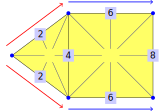
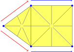
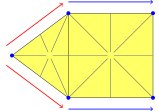
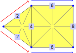
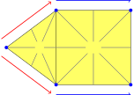
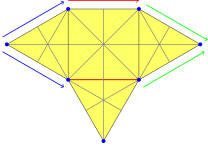
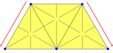
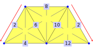
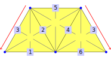
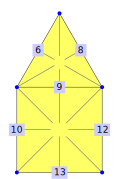

In section 2.2 we introduced the concept of TwistedPolygonalComplex that went further than a pure incidence geometry. This chapter describes this additional structure and how to access it.
Section 5.1 covers the extension of the incidence structure for polygonal complexes (compare Section 3.2) to chambers. Section 5.2 covers the adjacency structure of those chambers. Finally, Section 5.3 presents some methods to construct twisted polygonal complexes. Finally, Section 5.4 explores the relation between polygonal complexes and twisted polygonal complexes.
Polygonal complexes only focus on the incidence between vertices, edges, and faces. In contrast, twisted polygonal complexes also care about chambers, which can be interpreted as the "small triangles" in a barycentric subdivision.
Each of these chambers is incident to exactly one vertex, one edge, and one face. Thus, we can use *Of*-methods, similar as in Section 3.2. As an example, we use the following twisted polygonal complex:

gap> complex := TwistedPolygonalComplexByChamberRelations( > [3,5,5,5,5,3,5,5,5,7,7,7,7,5], > [2,2,4,4,2,2,4,4,6,6,8,8,6,6], > [1,1,1,1,1,1,9,9,9,9,9,9,9,9], > (1,2)(3,4)(5,6)(7,8)(9,10)(11,12)(13,14), > (1,6)(2,3)(4,5)(7,14)(8,9)(10,11)(12,13), > [[1,6],[2,5],[3,8],[4,7],[9,14],[10,13],[11],[12]]); twisted polygonal surface (3 vertices, 4 edges, 2 faces, and 14 chambers)
The chambers are represented by a set of positive integers.
‣ Chambers( complex ) | ( attribute ) |
‣ NumberOfChambers( complex ) | ( attribute ) |
Returns: A set of positive integers/a non-negative integer
Return the set/number of chambers
As an example consider the twisted polygonal complex from the beginning of Section 5.1:

gap> Chambers(complex); [ 1, 2, 3, 4, 5, 6, 7, 8, 9, 10, 11, 12, 13, 14 ] gap> NumberOfChambers(complex); 14
‣ VerticesOfChambers( complex ) | ( attribute ) |
‣ VertexOfChamber( complex, chamber ) | ( operation ) |
‣ VertexOfChamberNC( complex, chamber ) | ( operation ) |
Returns: a list of positive integers / a positive integers
The method VertexOfChamber(complex, chamber) returns the vertex that is incident to chamber. The NC-version does not check whether the given chamber is a chamber of complex.
The attribute VerticesOfChambers(complex) collects all of those vertices in a list that is indexed by the chamber labels, i.e. VerticesOfChambers(complex)[chamber] = VertexOfChamber(complex, chamber). All other positions of this list are not bound.
As an example consider the twisted polygonal complex from the beginning of Section 5.1:

gap> VertexOfChamber(complex, 2); 5 gap> VertexOfChamber(complex, 12); 7 gap> VerticesOfChambers(complex); [ 3, 5, 5, 5, 5, 3, 5, 5, 5, 7, 7, 7, 7, 5 ]
‣ ChambersOfVertices( complex ) | ( attribute ) |
‣ ChambersOfVertex( complex, vertex ) | ( operation ) |
‣ ChambersOfVertexNC( complex, vertex ) | ( operation ) |
Returns: a list of sets of positive integers / a set of positive integers
The method ChambersOfVertex(complex, vertex) returns the set of chambers that are incident to vertex. The NC-version does not check whether the given vertex is a vertex of complex.
The attribute ChambersOfVertices(complex) collects all of those sets in a list that is indexed by the vertex labels, i.e. ChambersOfVertices(complex)[vertex] = ChambersOfVertex(complex, vertex). All other positions of this list are not bound.
As an example consider the twisted polygonal complex from the beginning of Section 5.1:
gap> ChambersOfVertex(complex, 3); [ 1, 6 ] gap> ChambersOfVertex(complex, 7); [ 10, 11, 12, 13 ] gap> ChambersOfVertices(complex); [ ,, [ 1, 6 ],, [ 2, 3, 4, 5, 7, 8, 9, 14],, [ 10, 11, 12, 13 ] ]
‣ EdgesOfChambers( complex ) | ( attribute ) |
‣ EdgeOfChamber( complex, chamber ) | ( operation ) |
‣ EdgeOfChamberNC( complex, chamber ) | ( operation ) |
Returns: a list of positive integers / a positive integers
The method EdgeOfChamber(complex, chamber) returns the edge that is incident to chamber. The NC-version does not check whether the given chamber is a chamber of complex.
The attribute EdgesOfChambers(complex) collects all of those edges in a list that is indexed by the chamber labels, i.e. EdgesOfChambers(complex)[chamber] = EdgeOfChamber(complex, chamber). All other positions of this list are not bound.
As an example consider the twisted polygonal complex from the beginning of Section 5.1:

gap> EdgeOfChamber(complex, 2); 2 gap> EdgeOfChamber(complex, 12); 8 gap> EdgesOfChambers(complex); [ 2, 2, 4, 4, 2, 2, 4, 4, 6, 6, 8, 8, 6, 6 ]
‣ ChambersOfEdges( complex ) | ( attribute ) |
‣ ChambersOfEdge( complex, edge ) | ( operation ) |
‣ ChambersOfEdgeNC( complex, edge ) | ( operation ) |
Returns: a list of sets of positive integers / a set of positive integers
The method ChambersOfEdge(complex, edge) returns the set of chambers that are incident to edge. The NC-version does not check whether the given edge is an edge of complex.
The attribute ChambersOfEdges(complex) collects all of those sets in a list that is indexed by the edge labels, i.e. ChambersOfEdges(complex)[edge] = ChambersOfEdge(complex, edge). All other positions of this list are not bound.
As an example consider the twisted polygonal complex from the beginning of Section 5.1:
gap> ChambersOfEdge(complex, 4); [ 3, 4, 7, 8 ] gap> ChambersOfEdge(complex, 6); [ 9, 10, 13, 14 ] gap> ChambersOfEdges(complex); [ , [ 1, 2, 5, 6 ],, [ 3, 4, 7, 8 ],, [ 9, 10, 13, 14],, [ 11, 12 ] ]
‣ FacesOfChambers( complex ) | ( attribute ) |
‣ FaceOfChamber( complex, chamber ) | ( operation ) |
‣ FaceOfChamberNC( complex, chamber ) | ( operation ) |
Returns: a list of positive integers / a positive integers
The method FaceOfChamber(complex, chamber) returns the face that is incident to chamber. The NC-version does not check whether the given chamber is a chamber of complex.
The attribute FacesOfChambers(complex) collects all of those faces in a list that is indexed by the chamber labels, i.e. FacesOfChambers(complex)[chamber] = FaceOfChamber(complex, chamber). All other positions of this list are not bound.
As an example consider the twisted polygonal complex from the beginning of Section 5.1:

gap> FaceOfChamber(complex, 2); 1 gap> FaceOfChamber(complex, 12); 9 gap> FacesOfChambers(complex); [ 1, 1, 1, 1, 1, 1, 9, 9, 9, 9, 9, 9, 9, 9 ]
‣ ChambersOfFaces( complex ) | ( attribute ) |
‣ ChambersOfFace( complex, face ) | ( operation ) |
‣ ChambersOfFaceNC( complex, face ) | ( operation ) |
Returns: a list of sets of positive integers / a set of positive integers
The method ChambersOfFace(complex, face) returns the set of chambers that are incident to face. The NC-version does not check whether the given face is a face of complex.
The attribute ChambersOfFaces(complex) collects all of those sets in a list that is indexed by the face labels, i.e. ChambersOfFaces(complex)[face] = ChambersOfFace(complex, face). All other positions of this list are not bound.
As an example consider the twisted polygonal complex from the beginning of Section 5.1:
gap> ChambersOfFace(complex, 9); [ 7, 8, 9, 10, 11, 12, 13, 14 ] gap> ChambersOfFaces(complex); [ [ 1, 2, 3, 4, 5, 6 ],,,,,,,, [ 7, 8, 9, 10, 11, 12, 13, 14 ] ]
By focussing on chambers, twisted polygonal complexes are much more expressive than polygonal complexes. Thus, chamber manipulation is of paramount importance when dealing with twisted polygonal complexes. The most important aspects of chambers is their adjacency, which we illustrate with the following twisted polygonal complex:

gap> complex := TwistedPolygonalComplexByChamberAdjacencies( > (1,2)(3,4)(5,6)(7,8)(9,10)(11,12)(13,14)(15,16)(17,18)(19,20)(21,22)(23,24)(25,26), > (1,6)(2,3)(4,5)(7,14)(8,9)(10,11)(12,13)(15,20)(16,17)(18,19)(21,26)(22,23)(24,25), > [[1,6],[2,5],[3,8],[4,7],[9,14,22],[10,13,21],[11,16],[12,15],[17,20],[18,19],[23],[24],[25],[26]]); twisted polygonal complex (5 vertices, 7 edges, 4 faces, and 26 chambers)
There are three kinds of chamber adjacencies: 0-adjacent, 1-adjacent, and 2-adjacent. We can calculate each of those:
gap> ZeroAdjacentChamber(complex, 9); 10 gap> OneAdjacentChamber(complex, 9); 8 gap> TwoAdjacentChambers(complex,9); [ 14, 22 ]
For each chamber, there is exactly one 0-adjacent chamber and exactly one 1-adjacent chamber. However, there may be an arbitrary number of 2-adjacent chambers.
gap> TwoAdjacentChambers(complex, 12); [ 15 ] gap> TwoAdjacentChambers(complex, 23); []
We can also work with all adjacencies simultaneously. Currently, three different options are supported:
An equivalence relation on the set of chambers
gap> e0 := ZeroAdjacencyRelation(complex);; gap> EquivalenceClasses(e0); [ {1}, {3}, {5}, {7}, {9}, {11}, {13}, {15}, {17}, {19}, {21}, {23}, {25} ] gap> e1 := OneAdjacencyRelation(complex);; gap> EquivalenceClasses(e1); [ {1}, {2}, {4}, {7}, {8}, {10}, {12}, {15}, {16}, {18}, {21}, {22}, {24} ] gap> e2 := TwoAdjacencyRelation(complex);; gap> EquivalenceClasses(e2); [ {1}, {2}, {3}, {4}, {9}, {10}, {11}, {12}, {17}, {18}, {23}, {24}, {25}, {26} ]
A set of equivalence classes
gap> ZeroAdjacencyClasses(complex); [ [ 1, 2 ], [ 3, 4 ], [ 5, 6 ], [ 7, 8 ], [ 9, 10 ], [ 11, 12 ], [ 13, 14 ], [ 15, 16 ], [ 17, 18 ], [ 19, 20 ], [ 21, 22 ], [ 23, 24 ], [ 25, 26 ] ] gap> OneAdjacencyClasses(complex); [ [ 1, 6 ], [ 2, 3 ], [ 4, 5 ], [ 7, 14 ], [ 8, 9 ], [ 10, 11 ], [ 12, 13 ], [ 15, 20 ], [ 16, 17 ], [ 18, 19 ], [ 21, 26 ], [ 22, 23 ], [ 24, 25 ]] gap> TwoAdjacencyClasses(complex); [ [ 1, 6 ], [ 2, 5 ], [ 3, 8 ], [ 4, 7 ], [ 9, 14, 22 ], [ 10,13 ,21 ], [ 11, 16 ], [ 12, 15 ], [ 17, 20 ], [ 18, 19 ], [ 23 ], [ 24 ], [ 25 ], [ 26 ] ]
An involution (element of the symmetric group on the chambers). This is always possible for 0-adjacency and 1-adjacency. For 2-adjacency, it works if and only if we have a twisted polygonal surface.
gap> ZeroAdjacencyInvolution(complex); (1,2)(3,4)(5,6)(7,8)(9,10)(11,12)(13,14)(15,16)(17,18)(19,20)(21,22)(23,24)(25,26) gap> OneAdjacencyInvolution(complex); (1,6)(2,3)(4,5)(7,14)(8,9)(10,11)(12,13)(15,20)(16,17)(18,19)(21,26)(22,23)(24,25)
‣ ZeroAdjacentChamber( complex, chamber ) | ( operation ) |
‣ ZeroAdjacentChamberNC( complex, chamber ) | ( operation ) |
‣ OneAdjacentChamber( complex, chamber ) | ( operation ) |
‣ OneAdjacentChamberNC( complex, chamber ) | ( operation ) |
‣ TwoAdjacentChamber( complex, chamber ) | ( operation ) |
‣ TwoAdjacentChamberNC( complex, chamber ) | ( operation ) |
‣ TwoAdjacentChambers( complex, chamber ) | ( operation ) |
‣ TwoAdjacentChambersNC( complex, chamber ) | ( operation ) |
Returns: a positive integer or a list of positive integers
Given a chamber of a twisted polygonal complex complex, these methods return the adjacent chambers:
ZeroAdjacentChamber(complex, chamber) returns the unique chamber that is 0-adjacent to chamber.
OneAdjacentChamber(complex, chamber) returns the unique chamber that is 1-adjacent to chamber.
TwoAdjacentChambers(complex, chamber) returns the set of chambers that are 2-adjacent to chamber. If this set contains exactly one element, the method TwoAdjacentChamber is also applicable (otherwise, an error is raised).
The NC-version does not check whether chamber is a chamber of complex. In the case of TwoAdjacentChamberNC, it also does not check the number of 2-adjacent chambers.
As an example, consider the twisted polygonal complex from the beginning of Section 5.2:
gap> ZeroAdjacentChamber(complex, 4); 3 gap> OneAdjacentChamber(complex, 4); 5 gap> gap> TwoAdjacentChamber(complex, 4); 7 gap> TwoAdjacentChambers(complex, 4); [ 7 ] gap> TwoAdjacentChambers(complex, 14); [ 9, 22 ] gap> TwoAdjacentChambers(complex, 23); []
‣ IsZeroAdjacentChambers( complex, chamberA, chamberB ) | ( operation ) |
‣ IsZeroAdjacentChambersNC( complex, chamberA, chamberB ) | ( operation ) |
‣ IsOneAdjacentChambers( complex, chamberA, chamberB ) | ( operation ) |
‣ IsOneAdjacentChambersNC( complex, chamberA, chamberB ) | ( operation ) |
‣ IsTwoAdjacentChambers( complex, chamberA, chamberB ) | ( operation ) |
‣ IsTwoAdjacentChambersNC( complex, chamberA, chamberB ) | ( operation ) |
Returns: true or false
Given two chambers of a twisted polygonal complex complex, these methods check whether they are 0-adjacent, 1-adjacent, or 2-adjacent.
The NC-version does not check whether chamberA and chamberB are chambers of complex.
As an example, consider the twisted polygonal complex from the beginning of Section 5.2:
gap> IsZeroAdjacentChambers(complex, 4,3); true gap> IsZeroAdjacentChambers(complex, 9, 22); false gap> IsOneAdjacentChambers(complex, 8, 9); true gap> IsOneAdjacentChambers(complex, 11, 20); false gap> IsTwoAdjacentChambers(complex, 12, 15); true gap> IsTwoAdjacentChambers(complex, 13, 21); true gap> IsTwoAdjacentChambers(complex, 1, 5); false
‣ ZeroAdjacencyInvolution( complex ) | ( attribute ) |
‣ OneAdjacencyInvolution( complex ) | ( attribute ) |
‣ TwoAdjacencyInvolution( complex ) | ( attribute ) |
Returns: a positive integer, a list of positive integers, or fail
Given a twisted polygonal complex complex, these methods return the involutions that encode adjacency of chambers. The method ZeroAdjacencyInvolution returns an involution whose action on a chamber produces the unique chamber that is 0-adjacent to the first one. The method OneAdjacencyInvolution does the same for 1-adjacency.
For 2-adjacency, each chamber may have an arbitrary number of 2-adjacent chambers. If each chamber has at most one 2-adjacent chamber (i.e. if complex is a twisted polygonal surface), TwoAdjacencyInvolution returns the corresponding involution. Otherwise, it returns fail.
As an example, consider the twisted polygonal complex from the beginning of Section 5.2:
gap> ZeroAdjacencyInvolution(complex); (1,2)(3,4)(5,6)(7,8)(9,10)(11,12)(13,14)(15,16)(17,18)(19,20)(21,22)(23,24)(25,26) gap> OneAdjacencyInvolution(complex); (1,6)(2,3)(4,5)(7,14)(8,9)(10,11)(12,13)(15,20)(16,17)(18,19)(21,26)(22,23)(24,25) gap> TwoAdjacencyInvolution(complex); fail
‣ ZeroAdjacencyClasses( complex ) | ( attribute ) |
‣ OneAdjacencyClasses( complex ) | ( attribute ) |
‣ TwoAdjacencyClasses( complex ) | ( attribute ) |
Returns: a set of sets of positive integers
Given a twisted polygonal complex complex, these methods return a set of sets encoding the adjacency of chambers.
The method ZeroAdjacencyClasses returns a set of pairs, such that the elements of each pair are 0-adjacent. The method OneAdjacencyClasses does the same for 1-adjacency.
The method TwoAdjacencyClasses is similar, but it returns a set of sets. Every pair of chambers in one of the contained sets is 2-adjacent.
As an example, consider the twisted polygonal complex from the beginning of Section 5.2:
gap> ZeroAdjacencyClasses(complex); [ [ 1, 2 ], [ 3, 4 ], [ 5, 6 ], [ 7, 8 ], [ 9, 10 ], [ 11, 12 ], [ 13, 14 ], [ 15, 16 ], [ 17, 18 ], [ 19, 20 ], [ 21, 22 ], [ 23, 24 ], [ 25, 26 ] ] gap> OneAdjacencyClasses(complex); [ [ 1, 6 ], [ 2, 3 ], [ 4, 5 ], [ 7, 14 ], [ 8, 9 ], [ 10, 11 ], [ 12, 13 ], [ 15, 20 ], [ 16, 17 ], [ 18, 19 ], [ 21, 26 ], [ 22, 23 ], [ 24, 25 ]] gap> TwoAdjacencyClasses(complex); [ [ 1, 6 ], [ 2, 5 ], [ 3, 8 ], [ 4, 7 ], [ 9 , 14, 22 ], [ 10 ,13 ,21 ], [ 11, 16 ], [ 12 , 15 ], [ 17, 20 ], [ 18, 19 ], [ 23 ], [ 24 ], [ 25 ], [ 26 ] ]
‣ ZeroAdjacencyRelation( complex ) | ( attribute ) |
‣ OneAdjacencyRelation( complex ) | ( attribute ) |
‣ TwoAdjacencyRelation( complex ) | ( attribute ) |
Returns: an equivalence relation
Given a twisted polygonal complex complex, these methods return an equivalence relation encoding the adjacency of chambers.
The method ZeroAdjacencyRelation returns an equivalence relation on the set of chambers, such that two chambers are equivalent if and only if they are 0-adjacent or identical.
The methods OneAdjacencyRelation and TwoAdjacencyRelation do the same for 1-adjacency and 2-adjacency.
As an example, consider the twisted polygonal complex from the beginning of Section 5.2:
gap> e0 := ZeroAdjacencyRelation(complex);; gap> EquivalenceClasses(e0); [ {1}, {3}, {5}, {7}, {9}, {11}, {13}, {15}, {17}, {19}, {21}, {23}, {25} ] gap> e1 := OneAdjacencyRelation(complex);; gap> EquivalenceClasses(e1); [ {1}, {2}, {4}, {7}, {8}, {10}, {12}, {15}, {16}, {18}, {21}, {22}, {24} ] gap> e2 := TwoAdjacencyRelation(complex);; gap> EquivalenceClasses(e2); [ {1}, {2}, {3}, {4}, {9}, {10}, {11}, {12}, {17}, {18}, {23}, {24}, {25}, {26} ]
Twisted polygonal complexes can be constructed in several different ways. This section explores several different possible constructions.
TwistedPolygonalComplexByChamberRelations (5.3-1) constructs a twisted polygonal complex from the vertices, edges, and faces that are incident to each chamber, together with the three adjacency relations.
TwistedPolygonalComplexByChamberAdjacencies (5.3-2) constructs a twisted polygonal complex purely from its chamber adjacencies. The vertices, edges, and faces are deduced from them.
TwistedPolygonalSurfaceByChamberInvolutions (5.3-3) constructs a twisted polygonal surface from its chamber adjacencies, that have to be given as involutions.
To exemplify these methods, all of them construct the twisted polygonal surface illustrated here:

‣ TwistedPolygonalComplexByChamberRelations( verticesOfChambers, edgesOfChambers, facesOfChambers, zeroAdjacency, oneAdjacency, twoAdjacency ) | ( operation ) |
‣ TwistedPolygonalComplexByChamberRelationsNC( verticesOfChambers, edgesOfChambers, facesOfChambers, zeroAdjacency, oneAdjacency, twoAdjacency ) | ( operation ) |
‣ TwistedPolygonalSurfaceByChamberRelations( verticesOfChambers, edgesOfChambers, facesOfChambers, zeroAdjacency, oneAdjacency, twoAdjacency ) | ( operation ) |
‣ TwistedPolygonalSurfaceByChamberRelationsNC( verticesOfChambers, edgesOfChambers, facesOfChambers, zeroAdjacency, oneAdjacency, twoAdjacency ) | ( operation ) |
Returns: a twisted polygonal complex
This method constructs a twisted polygonal complex (2.2). It is based on the set of chambers, which is represented as a set of positive integers. The method takes the following parameters:
verticesOfChambers: A list that has an entry for each chamber (a positive integer). The entry is the unique vertex (a positive integer) that is incident to that chamber.
edgesOfChambers: A list that has an entry for each chamber (a positive integer). The entry is the unique edge (a positive integer) that is incident to that chamber.
facesOfChambers: A list that has an entry for each chamber (a positive integer). The entry is the unique face (a positive integer) that is incident to that chamber.
zeroAdjacency: This parameter encodes which chambers are 0-adjacent. It can be given as an involution without fixed points or as a list of pairs of chambers.
oneAdjacency: This parameter encodes which chambers are 1-adjacent. It can be given as an involution without fixed points or as a list of pairs of chambers.
twoAdjacency: This parameter encodes which chambers are 1-adjacent. It can be given as an involution (only possible for twisted polygonal surfaces) or as a list of lists of chambers.
All of these parameters rely on the set of chambers:
For verticesOfChambers, edgesOfChambers, and facesOfChambers, the set of chambers is the set of bound positions.
If zeroAdjacency or oneAdjacency are given as involutions, the set of chambers is the set of moved points.
If twoAdjacency is given as involution, the set of chambers is a superset of the set of moved points.
If zeroAdjacency, oneAdjacency, or twoAdjacency are given as list of lists, they define a partition of the set of chambers.
The NC-version does not check the consistency of this information.
As an example, we construct the following twisted polygonal surface:

gap> TwistedPolygonalComplexByChamberRelations( > [3,7,7,5,5,3,5,7,7,5,5,5,5,7,7,3,3,5], > [4,4,6,6,2,2,6,6,10,10,8,8,10,10,12,12,2,2], > [1,1,1,1,1,1,9,9,9,9,9,9,11,11,11,11,11,11], > [[1,2],[3,4],[5,6],[7,8],[9,10],[11,12],[13,14],[15,16],[17,18]], > (1,6)(2,3)(4,5)(7,12)(8,9)(10,11)(13,18)(14,15)(16,17), > [[1],[2],[3,8],[4,7],[5,18],[6,17],[9,14],[10,13],[11],[12],[15],[16]]); twisted polygonal surface (3 vertices, 6 edges, 3 faces, and 18 chambers)
‣ TwistedPolygonalComplexByChamberAdjacencies( zeroAdjacency, oneAdjacency, twoAdjacency ) | ( operation ) |
‣ TwistedPolygonalComplexByChamberAdjacenciesNC( zeroAdjacency, oneAdjacency, twoAdjacency ) | ( operation ) |
‣ TwistedPolygonalSurfaceByChamberAdjacencies( zeroAdjacency, oneAdjacency, twoAdjacency ) | ( operation ) |
‣ TwistedPolygonalSurfaceByChamberAdjacenciesNC( zeroAdjacency, oneAdjacency, twoAdjacency ) | ( operation ) |
Returns: a twisted polygonal complex
This method constructs a twisted polygonal complex (2.2). It is based on the set of chambers, which is represented as a set of positive integers. The method takes the following parameters:
zeroAdjacency: This parameter encodes which chambers are 0-adjacent. It can be given as an involution without fixed points or as a list of pairs of chambers.
oneAdjacency: This parameter encodes which chambers are 1-adjacent. It can be given as an involution without fixed points or as a list of pairs of chambers.
twoAdjacency: This parameter encodes which chambers are 1-adjacent. It can be given as an involution (only possible for twisted polygonal surfaces) or as a list of lists of chambers.
Vertices, edges, and faces are constructed automatically.
All of these parameters rely on the set of chambers:
If zeroAdjacency or oneAdjacency are given as involutions, the set of chambers is the set of moved points.
If twoAdjacency is given as involution, the set of chambers is a superset of the set of moved points.
If zeroAdjacency, oneAdjacency, or twoAdjacency are given as list of lists, they define a partition of the set of chambers.
The NC-version does not check the consistency of this information.
As an example, we construct the following twisted polygonal surface (the labels of vertices, edges, and faces are the default ones): 
gap> complex := TwistedPolygonalComplexByChamberAdjacencies( > [[1,2],[3,4],[5,6],[7,8],[9,10],[11,12],[13,14],[15,16],[17,18]], > (1,6)(2,3)(4,5)(7,12)(8,9)(10,11)(13,18)(14,15)(16,17), > [[1],[2],[3,8],[4,7],[5,18],[6,17],[9,14],[10,13],[11],[12],[15],[16]]); twisted polygonal surface (3 vertices, 6 edges, 3 faces, and 18 chambers) gap> ChambersOfVertices(complex); [ [ 1, 6, 16, 17 ], [ 2, 3, 8, 9, 14, 15 ], [ 4, 5, 7, 10, 11, 12, 13, 18 ] ] gap> ChambersOfEdges(complex); [ [ 1, 2 ], [ 3, 4, 7, 8 ], [ 5, 6, 17, 18 ], [ 9, 10, 13, 14 ], [ 11, 12 ], [ 15, 16 ] ] gap> ChambersOfFaces(complex); [ [ 1, 2, 3, 4, 5, 6 ], [ 7, 8, 9, 10, 11, 12 ], [ 13, 14, 15, 16, 17, 18 ] ]
‣ TwistedPolygonalSurfaceByChamberInvolutions( zeroAdjacency, oneAdjacency, twoAdjacency ) | ( operation ) |
‣ TwistedPolygonalSurfaceByChamberInvolutionsNC( zeroAdjacency, oneAdjacency, twoAdjacency ) | ( operation ) |
Returns: a twisted polygonal surface
This method constructs a twisted polygonal surface (2.2). It is based on the set of chambers, which is represented as a set of positive integers. The method takes the following parameters:
zeroAdjacency: This parameter encodes which chambers are 0-adjacent, given as an involution without fixed points.
oneAdjacency: This parameter encodes which chambers are 1-adjacent, given as an involution without fixed points.
twoAdjacency: This parameter encodes which chambers are 2-adjacent, given as an involution.
Vertices, edges, and faces are constructed automatically.
All of these parameters rely on the set of chambers:
For zeroAdjacency and oneAdjacency, the set of moved points is the set of chambers.
For twoAdjacency, the set of chambers is a superset of the set of moved points.
The NC-version does not check the consistency of this information.
As an example, we construct the following twisted polygonal surface (the labels of vertices, edges, and faces are the default ones):

gap> complex := TwistedPolygonalSurfaceByChamberInvolutions( > (1,2)(3,4)(5,6)(7,8)(9,10)(11,12)(13,14)(15,16)(17,18), > (1,6)(2,3)(4,5)(7,12)(8,9)(10,11)(13,18)(14,15)(16,17), > (3,8)(4,7)(5,18)(6,17)(9,14)(10,13)); twisted polygonal surface (3 vertices, 6 edges, 3 faces, and 18 chambers) gap> ChambersOfVertices(complex); [ [ 1, 6, 16, 17 ], [ 2, 3, 8, 9, 14, 15 ], [ 4, 5, 7, 10, 11, 12, 13, 18 ] ] gap> ChambersOfEdges(complex); [ [ 1, 2 ], [ 3, 4, 7, 8 ], [ 5, 6, 17, 18 ], [ 9, 10, 13, 14 ], [ 11, 12 ], [ 15, 16 ] ] gap> ChambersOfFaces(complex); [ [ 1, 2, 3, 4, 5, 6 ], [ 7, 8, 9, 10, 11, 12 ], [ 13, 14, 15, 16, 17, 18 ] ]
Every polygonal complex can be interpreted as a twisted polygonal complex. However, the formalism of polygonal complexes does not mention chambers at all. Thus, if we construct a polygonal complex with one of the methods from Chapter 4, we do not immediately know the chambers. Consider the following polygonal complex: 
gap> complex := PolygonalComplexByDownwardIncidence( > [ , , , , , [2,5], , [2,3], [3,5], [11,5], , [3,7], [7,11] ], > [[6,8,9], , , [9,10,12,13]]); polygonal surface (5 vertices, 6 edges, and 2 faces)
It turns out that it already contains information about its chambers.
gap> Chambers(complex); [ 1 .. 14 ] gap> VerticesOfChambers(complex); [ 2, 2, 3, 3, 3, 3, 5, 5, 5, 5, 7, 7, 11, 11 ] gap> EdgesOfChambers(complex); [ 6, 8, 8, 9, 9, 12, 6, 9, 9, 10, 12, 13, 10, 13 ] gap> FacesOfChambers(complex); [ 1, 1, 1, 1, 4, 4, 1, 1, 4, 4, 4, 4, 4, 4 ]
Thus, the chambers can be illustrated like this:

Although the labels seem random at first, there is a pattern here. In polygonal complexes, each chamber corresponds to exactly one flag (a triple of vertex, edge, face, that are all incident). The flags are given by
gap> Flags(complex); [ [ 2, 6, 1 ], [ 2, 8, 1 ], [ 3, 8, 1 ], [ 3, 9, 1 ], [ 3, 9, 4 ], [ 3, 12, 4 ], [ 5, 6, 1 ], [ 5, 9, 1 ], [ 5, 9, 4 ], [ 5, 10, 4 ], [ 7, 12, 4 ], [ 7, 13, 4 ], [ 11, 10, 4 ], [ 11, 13, 4 ]]
Notably, a chamber c corresponds to the flag with position c.
gap> VerticesOfChambers(complex) = List(Flags(complex), f -> f[1]); true gap> EdgesOfChambers(complex) = List(Flags(complex), f -> f[2]); true gap> FacesOfChambers(complex) = List(Flags(complex), f -> f[3]); true
Polygonal complexes whose chambers are given in this fashion have the property IsDefaultChamberSystem.
gap> IsDefaultChamberSystem(complex); true
‣ IsDefaultChamberSystem( complex ) | ( property ) |
Returns: true or false
A twisted polygonal complex complex has the property IsDefaultChamberSystem if it is a polygonal complex and the chambers correspond to the flags, in the following sense:
gap> VertexOfChamber(complex, chamber) = Flags(complex)[chamber][1]; gap> EdgeOfChamber(complex, chamber) = Flags(complex)[chamber][2]; gap> FaceOfChamber(complex, chamber) = Flags(complex)[chamber][3];
More detail can be found at the start of Section 5.4.
generated by GAPDoc2HTML